Tên đề tài
Hướng dẫn tạo Mirrored Volume (RAID-1 phần mềm) và cấu hình chia sẻ –
giới hạn dung lượng người dùng trên Windows Server
⚠️ Lưu ý trước khi thực hành
🚨 BẮT BUỘC – LÀM THEO THỨ TỰ:
Sinh viên PHẢI hoàn thành bài tổng hợp do thầy giao trước,
👉 SAU ĐÓ mới có đủ điều kiện để thực hiện
bài thực hành của nhóm.
❌ Không làm bài của thầy → KHÔNG THỂ làm bài nhóm.
-
01 máy Windows Server đã nâng cấp
Domain Controller.
- Tối thiểu 01 máy Client đã tham gia Domain.
-
Các máy Server & Client phải thông mạng (ping qua lại
được).
-
Bài làm phải chia nhóm người dùng theo phòng ban
(Kế Toán,
Kỹ Thuật)
(Chỉ thực hiện sau khi đã hoàn thành bài tổng hợp của thầy)
Tắt / kiểm tra Firewall (CMD – Run as Administrator):
netsh advfirewall set allprofiles state off
netsh advfirewall show allprofiles
Kiểm tra kết nối mạng:
ping <IP_Server>
ping <IP_Client>
Nếu ping không thông → kiểm tra Firewall, IP, DNS và trạng thái Domain.
Mục tiêu bài lab
Tạo Mirrored Volume (RAID-1 phần mềm) giữa Disk 0 và
Disk 1 (~10GB) bằng Disk Management. Volume sau khi tạo
có ký tự E:, định dạng NTFS, trạng
thái Healthy (Mirrored).
Yêu cầu trước khi bắt đầu
Thêm 2 ổ cứng ảo (10GB) trong VMware Workstation:
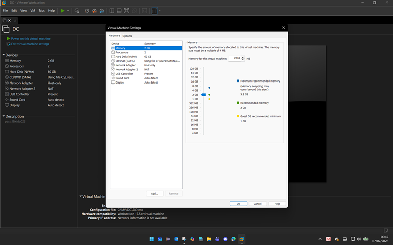
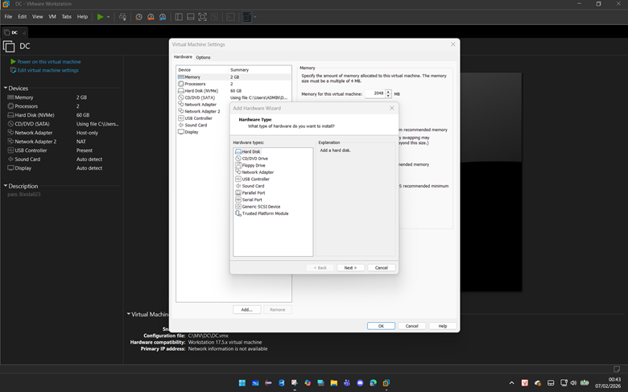
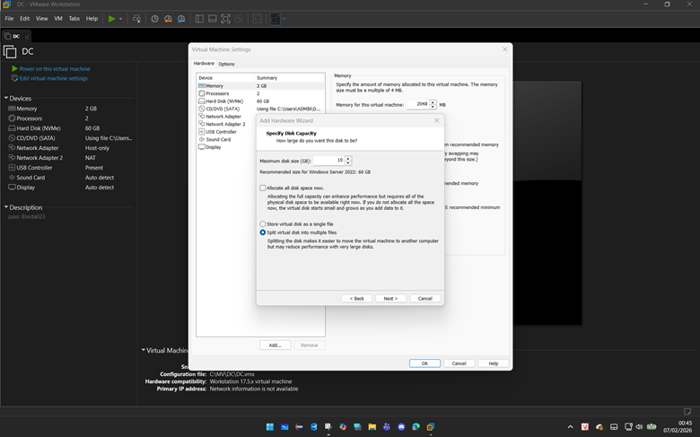
Đăng nhập Administrator → Mở Disk Management
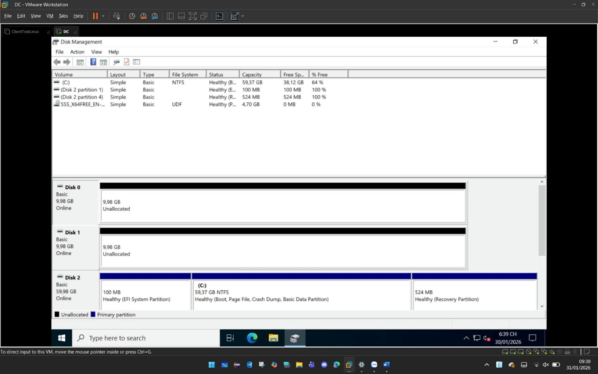
Bước 1: Kiểm tra trạng thái ổ đĩa
Disk 0 & Disk 1: Unallocated (~9.98GB)
Disk 2: Có sẵn C:, EFI, Recovery
Disk 0 & Disk 1: ở trạng thái Online (~9.98GB)
Chuột phải vào tên Disk > Initialize Disk > Chọn chuẩn GPT > OK.
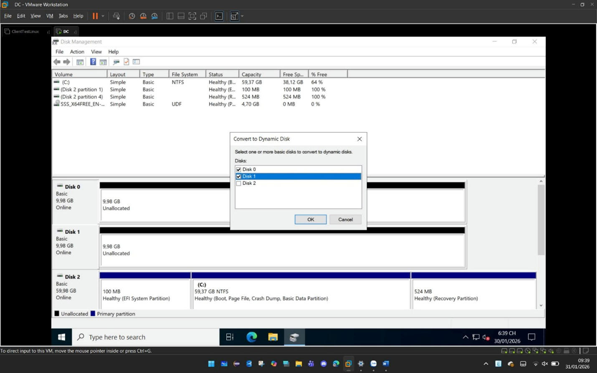
Bước 2: Convert Basic → Dynamic
Chuột phải Disk 0 → Convert to Dynamic Disk → chọn Disk 0 & Disk 1
Nhấn phải chuột vào Disk 0 (phần tên Disk 0, không phải phân vùng) →
chọn Convert to Dynamic Disk. Trong hộp thoại Convert to Dynamic Disk:
o Tick chọn Disk 0 và Disk 1 (nếu Disk 1 chưa được chọn). o Nhấn OK →
Convert → Yes (xác nhận chuyển đổi).
• Sau khi hoàn thành: Cả Disk 0 và Disk 1 chuyển sang trạng thái
Dynamic, màu nâu. • Lưu ý quan trọng:
o Chuyển sang Dynamic là bắt buộc để tạo mirrored volume (software
RAID-1 của Windows). o Không thể chuyển ngược về Basic mà không mất dữ
liệu (nên backup trước nếu cần). o Disk chứa hệ thống (boot/system) vẫn
mirror được, nhưng sync sẽ bắt đầu.
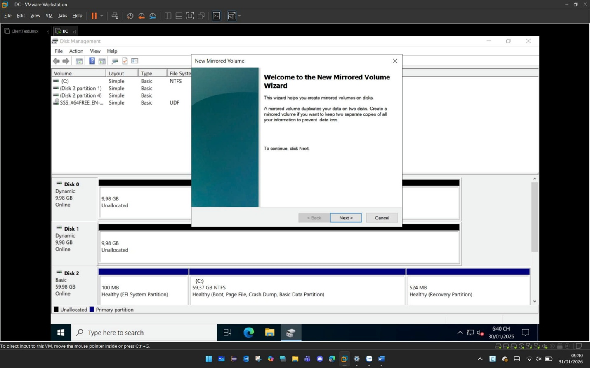
Bước 3: Tạo New Mirrored Volume
• Nhấn phải chuột vào phần Unallocated của Disk 0 (hoặc Disk 1) → chọn
New Mirrored Volume....
• Wizard New Mirrored Volume hiện ra với lời
giới thiệu: "This wizard helps you create mirrored volumes on disks. A
mirrored volume duplicates your data on two disks..."
• Nhấn Next.
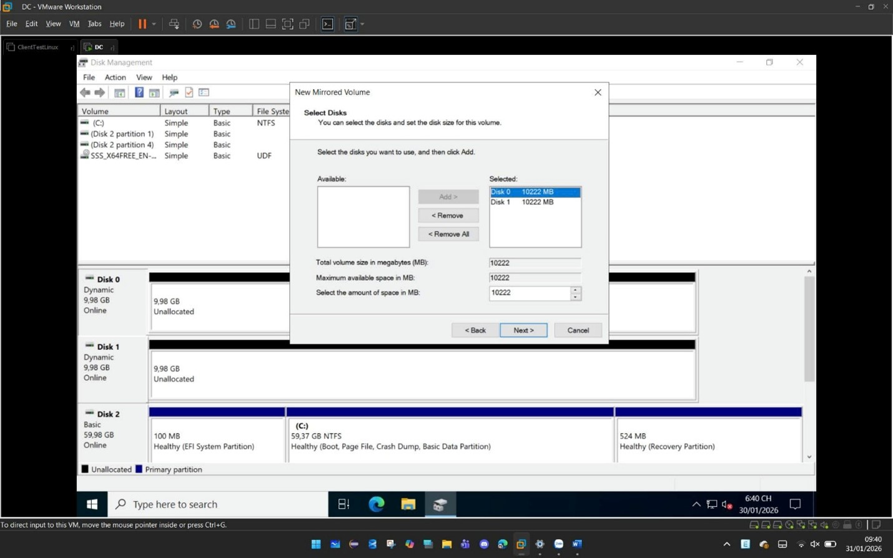
Bước 4: Chọn đĩa & dung lượng
Trong trang Select Disks:
Available disks: hiển thị các disk dynamic có unallocated.
Nhấn Add để chuyển Disk 1 (hoặc Disk 0) sang Selected.
Cả Disk 0 và Disk 1 đều được chọn (nếu chưa tự động).
Total volume size: ~10222 MB (khoảng 10 GB).
Maximum available: ~10222 MB.
Giữ nguyên hoặc điều chỉnh kích thước nếu cần (ở đây dùng hết).
Nhấn Next.
Trang Assign Drive Letter or Path:
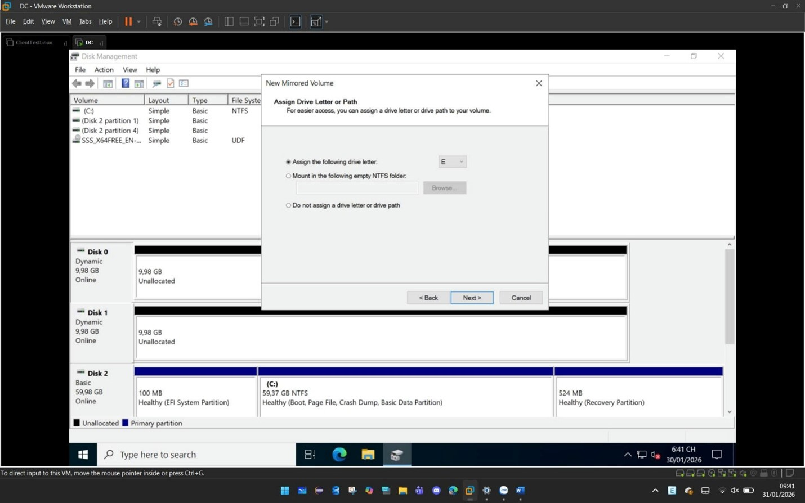
Bước 5: Gán ký tự ổ đĩa
Chọn Assign the following drive letter: E: (hoặc chữ cái trống khác).
Không chọn mount vào folder hoặc không gán letter.
Nhấn Next.
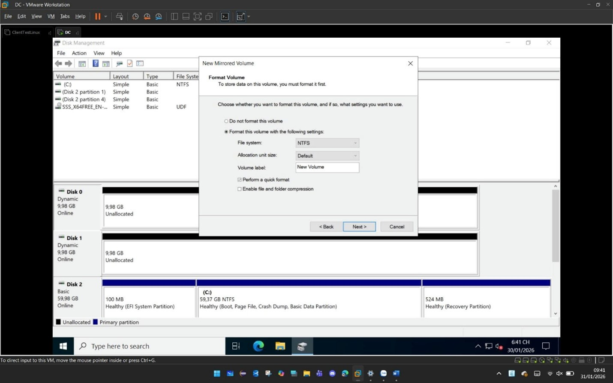
Bước 6: Format NTFS
Trang Format Volume:
Chọn Format this volume with the following settings:
File system: NTFS
Allocation unit size: Default
Volume label: New Volume (có thể đổi thành "Mirror Data" hoặc tên khác)
Tick Perform a quick format (khuyến khích để nhanh, vì mirror mới).
Không tick compression nếu không cần.
Nhấn Next.
Trang Completing the New Mirrored Volume Wizard:
Xem lại tóm tắt:
Volume type: Mirror
Disks selected: Disk 0, Disk 1
Volume size: 10222 MB
Drive letter: E:
File system: NTFS
Quick format: Yes
v.v.
Nhấn Finish.
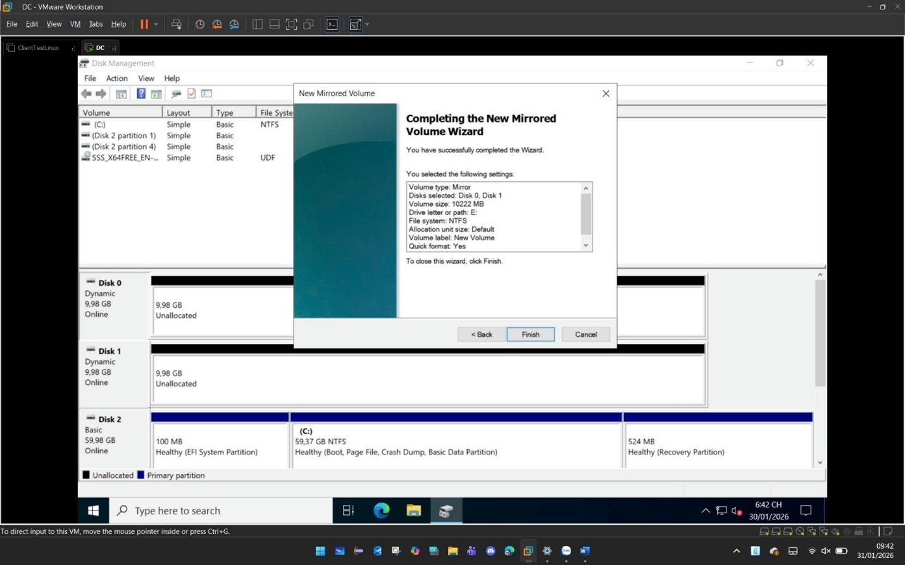
Bước 7: Hoàn tất & kiểm tra
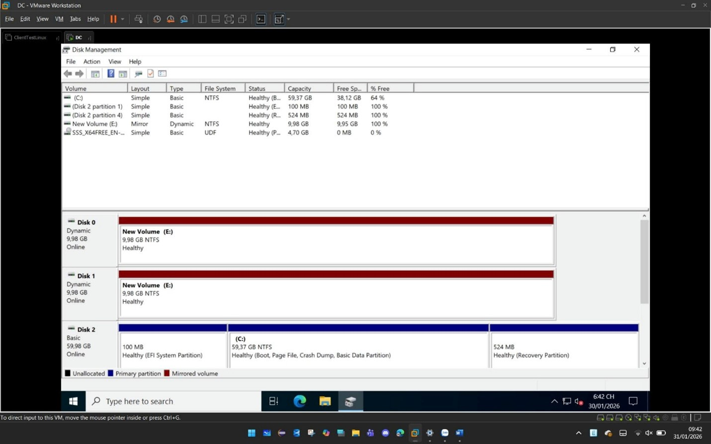
Thiết lập chia sẻ & Quota
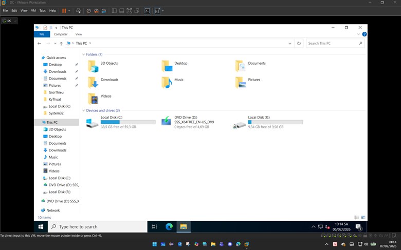
Chia sẻ thư mục
o Click chuột phải vào ổ đĩa đã tạo mới o Click vào tab Share → Advanced
Sharing → tick vào ô Share this folder → Đặt tên “LuuTru” ở dưới dòng
chữ Share name:
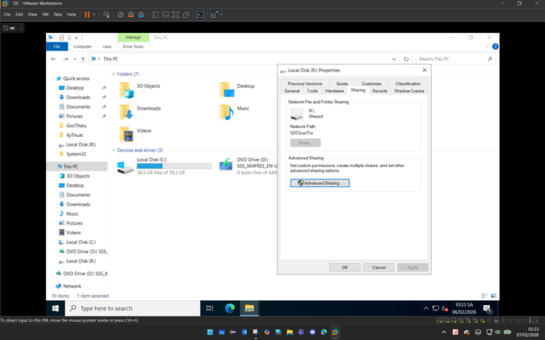
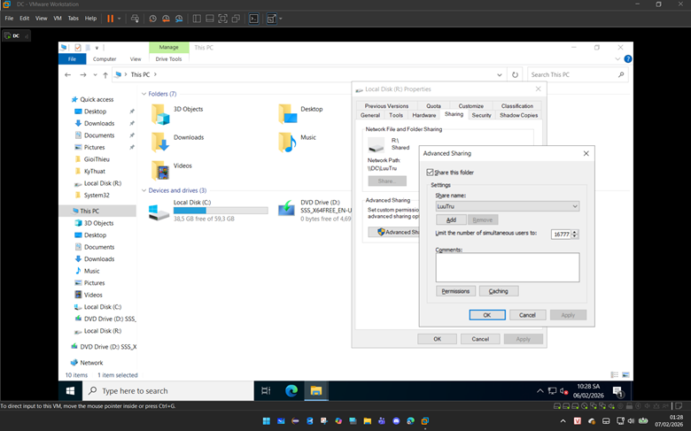
o Phân quyền cho user: Permissions → tick ô Full control → Ok cho tới
khi ra tới cửa sổ Properties
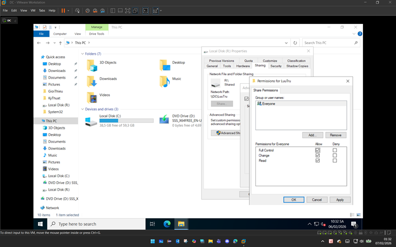
Phân quyền Security
o Chọn tab Security → Edit → remove hết các user dư thừa, chỉ chừa lại
CREATOR OWNER, Administrators → Add → gõ tên
nhóm user đã tạo trước đó → Check Names, có gạch dưới là
đúng → Ok → tick vào ô List folder contents → Ok → Ok
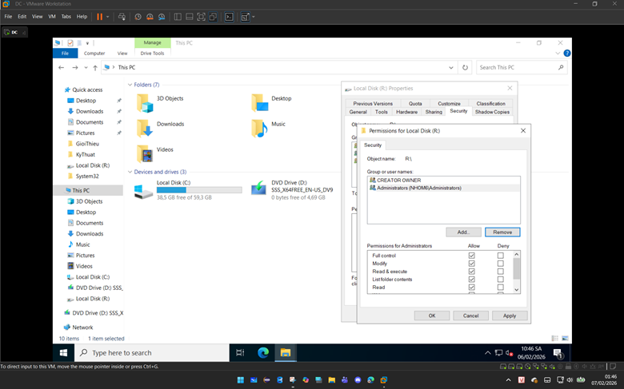
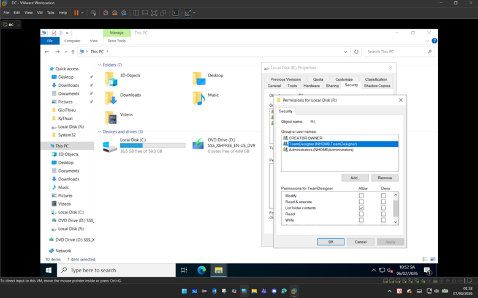
Tạo thư mục user
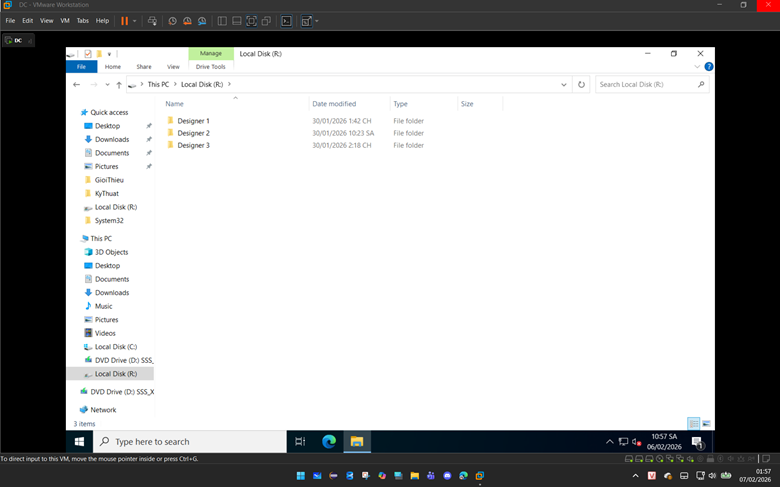
o Chuột phải Designer 1 → chọn tab Security → Edit → Add → gõ tên user
ứng với folder đã tạo → Check Names, có gạch dưới là đúng → Ok → tick
vào ô Modify → Ok → Ok
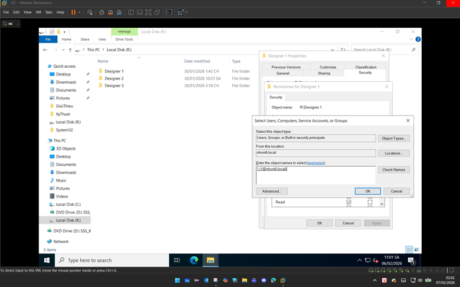
Thiết lập Quota
o Quay lại cửa sổ This PC → tab Quota → tick vào ô “Enable quota
management” → tick vào ô “Deny disk space to users exceeding quota
limit” để kích hoạt Hard Quota → tick vào ô “Limit disk space to” → gõ
dung lượng giới hạn và tùy chọn đơn vị (150 MB dung như hình dùng để thử
nghiệm) o Để chuyển thành Soft Quota ta bỏ tick ở ô “Deny disk space to
users exceeding quota limit” o Ok → hoàn thành giới hạn dung lượng cho
user

Kiểm tra hoạt động của Quota trên Client
Sau khi hoàn tất cấu hình Quota, đăng nhập vào
máy Client và thử
sao chép một file có dung lượng lớn
(vượt quá mức dung lượng đã giới hạn) vào thư mục được chia sẻ.
Khi vượt quá quota, Windows sẽ hiển thị thông báo lỗi.
Bạn hãy chụp lại màn hình thông báo này và gửi về email
của nhóm để hoàn tất bài lab.
🎉 Hoàn thành bài thực hành
Cảm ơn các bạn đã theo dõi và thực hiện bài lab. Chúc các bạn học tốt và
hoàn thành bài thực hành đúng yêu cầu.